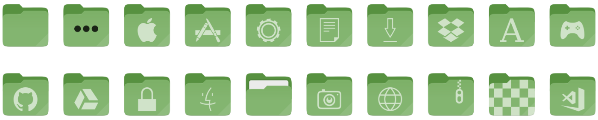
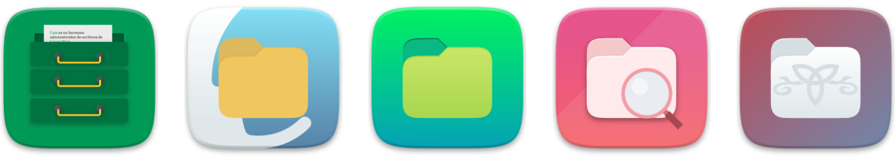
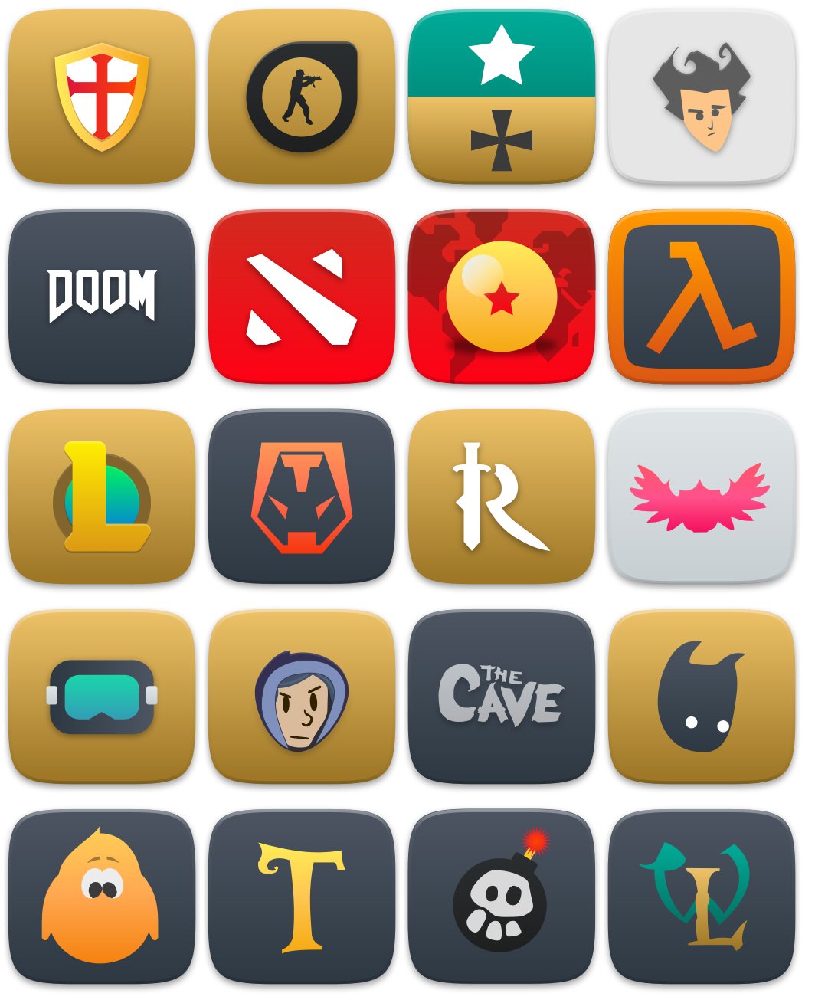
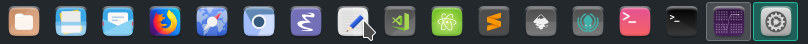

Suru++ 25
v25 or XXV
- I have increased from 2,2k to 4,7k icons!
- All 4,7k icons of the folder
apps have been redesigned;
- I have fixed the trash icons in KDE;
- I have fixed the wrong session icons;
- Suru++ has won the new folders with colour of Linux Mint:

- The file managers are no longer same, now are different and modern, and redesigned by Pavel Dimens (@pdimens):

- Hundreds Steam games icons are supported officially:

- Some icons have been redesigned by Pedro Gauna (@lapega).
v20 3.0 or XX 3.0
It is one of biggest changes made during one month in this icons theme:
- Fixed by @SmartFinn:
- Deleted the executable bit from files for security issues.
- Fixed icons with rendering issues on old systems.
- Removed some broken symlinks.
- By me:
- Removed all Gravit Designer base64 and metadata which caused rendering bugs.
- Reduced from 175MB to 110MB!
- Vectorised and improved the highlighting border in KDE, you can compare:
Before:

After:
- Improved the ugly colours of some icons as Activity Monitor and Terminal.
- Suru++ conservative and traditional monochromatic icons have been replaced for Papirus colourful and monochromatic icons because they fit very well with Suru++ 20.
- The grey colour of monochromatic icons have been replaced with the new cyberpunkish, elegant andmodern colour based on Papirus:
#5c616c.
- New countries flags (in development).
- Designed by @jcuenod:
- Designed by @Pronink:
- Added icons:
- Bookworm
- Clion
- DataGrip
- Etcher
- FontBase
- Goland
- Howl
- JetBrains Toolbox
- Joplin
- MPS
- Natron
- Neovim
- NextCloud
- Rider
- RubyMine
- SIgnal
- TeXmacs
- TeXstudio
- Unity 3D
- VMWare Viewer
- WebStorm
- Added 58 Flatpak icons:
- Android Studio
- Audacity
- Avidemux
- Blender
- Bookworn
- Corebird
- Darktable
- Discord
- Dolphin EMU
- Elisa
- Emacs
- Filezilla
- Firefox
- Firefox Developer
- Firefox Nightly
- GCompris
- Geogebra
- GIMP
- GNU Cash
- GPodder
- HexChat
- Inkscape
- JDownloader
- Joplin
- KDEConnect
- Kdenlive
- Keepass
- Krita
- LibreOffice
- Mendeley
- Minitube
- MonoDevelop
- Musecore
- MyPaint
- Neovim
- NextCloud
- Octave
- Okular
- OpenShop
- PhotoQT
- Picard
- Pitivi
- Postman
- Pycharm
- Remmina
- Signal
- Spotify
- Steam
- Sublime Text
- SuperTux
- Telegram
- TeXstudio
- Thunderbird
- Transmission
- Tuxpaint
- Viber
- VLC
- VSCode
- Zim
v20.1.3 or XX 1.3
- Fixing the broken symlinks.
- The folders
places fixed by @SmartFinn:
- Remove
-blue suffix from symbolic icons.
- Replace duplicate
places/symbolic icons to symlinks.
- Remove
-blue suffix from 16px icons.
- Replace duplicate
places/16 icons to symlinks.
- Delete color folder icons from
places/scalable (for build_color_folders.sh).
- Fix several symlinks in
places/scalable.
- Add missing symlinks to color folders.
- Adding new folders colours.
- Add new three colours of folders — blue grey, custom and teal.
- Adding the new folders 96 and 128 and retina folders.
- Improving the
index.theme.
- Correcting the misspelling of an icon to get well displayed.
- Fixing the missed directories
extensions, log and plugin in the file index.theme.
- Adding 5 missed icons.
- Improving the monochromatic icons of Octopi.
v20.1.2 or XX 1.2
Added icons:
- Android File Transfer
- Boxes
- Deepin Image Viewer
- Geary
- iBus Anthy
- iBus KKC
- OpenJDK 10
- Meld
- Notepad++
- Postman
- QT Linguist
- QT4 Linguist
- Visual Code Insiders
- xTerm
v20.1.1 or XX 1.1
Thanks/Спасибо to @bzhmurov for adding the Belarusian, Russian and Ukrainian translations in the index.theme!
v20 or XX
Welcome to the new and sexy Suru++ XX!
- Tested on many distributions and passed well.
- Redesigning the logotype.
- Adding the new screenshots.
- Removing the issue templates.
- Readjusting the AUTHORS, CONTRIBUTING, COPYING, LICENSE and README.md.
- Dropping the desktop files folders.
Officially supported for KDE and more than 20 distributions!
v16 to v19
- Suru++ 16 - Alpha 1
- Integrating the Suru++ Asprómauros into Suru++ to end all bugs and to make compatible with KDE and XFCE. Initialising the folder actions.
- Suru++ 17 - Alpha 2
- Redesigning the folders
actions and apps.
- Suru++ 18 - Alpha 3
- Finalising the folder
apps and initialising the folder categories.
- Suru++ 19 - Alpha 4, 5, 6, 7 and Beta
- Finalising the folders.
- Adding some missed icons requested by the users at the GitHub issues.
- Adding more than 5 colours of places, based on Alexey Varfolomeev’s Papirus places.
- Adding 1k new mimetypes, based on Numix mimetype icons.
- Correcting the bad quality of Catfish, Cherrytree and Google Chrome.
- Fixing the wrong icons in Dolphin sidebar.
- Fixing the bugs of icons as Octopi, Inkscape and Sublime Text in KDE environment.
- Readjusting many times the
index.theme.
- Removing the cursor theme.
v15
- Belarusian, Russian and Ukrainian translations added. Thanks to @bzhmurov!
- Fixed the wrong icons of Clocks
Icons designed by me:
- Added missed applications icons:
- 1Password
- 2GIS
- 3Depict
- 4chan
- 4kvideodownloader
- 4Pane
- 7z
- 9gag
- AArdict
- Abgx 360
- Abricotine
- aBrowser
- Accerciser
- Accessories - Archiver
- Accessories - Document Viewer
- Accessories - Image Viewer
- Accessories - Media Converter
- Accessories - Painting
- Accessories - Podcast
- Accessories - Screenshot
- Accessories - System Cleaning
- Accessories - Thesaurus
- ACE Stream Player
- Acetino
- AChemTool
- AcidDrip
- Actiona
- Agave
- Agenda
- Albert
- Alevt
- Alexandra
- Almanac
- AlphaPlot
- Alsamixer
- Altyo
- Amarok
- Amazon Canada
- Amazon China
- Amazon France
- Amazon Germany
- Amazon Great Britain
- Amazon Italy
- Amazon MP3 Store
- Amazon Spain
- AMD Ati
- AmSYnth
- Anaconda
- Ancestris
- Android ARC
- Android SDK
- AngrySearch
- Anjuta
- Anki
- Antimicro
- AnyDo
- APTIK Battery Monitor
- AptonCD
- Apx
- Aquemu
- Arch Linux
- Ardour
- Arduino
- Areca
- Argouml
- Ariamaestrosa
- Ark Client
- Arronax
- ArteFetcher
- ArteHashit
- ArtePlayMyMusic
- ArtePlayMyVideos
- ArteScrenshot
- ArteWebpin
- Arts
- AS
- Asbru
- ASC
- ASCII Design
- ASE
- Astah
- Atunes
- Auale
- Audacious
- Audacit
- Audience
- Audio Recorder
- AudioBook
- Aural Quiz
- Autocad
- Autokey
- Avast
- Avidemux
- Avocode
- AWN Applet
- AWN Applet Digital Clock
- AWN Manager
- Azureus
- B1 News
- Beyond Compare
- Bugzilla 3
- Cerebro
- ChmSee
- Colour Profile
- Compton (@Magog64)
- Eclipse JEE
- EOm (@Magog64)
- Files (Nemo)
- Folder Remote
- Foxit Reader
- GNOME MPV
- Google Translator
- GTK DiskFRee
- GTK Hash (@Magog64)
- GTK Select Colour (@Magog64)
- GTK3 Demo
- GTK3 Widget Factory
- GTK4 Demo
- KDiskFree
- Kig
- Kiten
- KMix
- KmPlot
- KStars
- lFTP
- LightDM SEttings
- MiamPlayer
- MidnightCommander
- Mozo (@Magog64)
- Oracle Java 8
- Osmo
- Panel Drawer
- PHPSTorm
- PyCharm
- Python 3.5
- RClock
- Remmina (@Magog64)
- Revelation
- Rygel
- Seahorse Preferences
- Softare Properties GTK (@Magog64)
- Software Center
- Synthesia
- TRON (by @Magog64)
- Typora
- Vidiot
- Yarock
- Added categoric applications icons in the folder
apps:
- Applications - Accessories
- Applications - Development
- Applications - Fonts
- Applications - Games
- Applications - Graphics
- Applications - Internet
- Applications - Multimedia
- Applications - Office
- Applications - Other
- Applications - PHP
- Applications - Python
- Applications - Science
- Applications - System
- Applications - System Orange
- Added Adobe applications icons:
- Adobe Flash
- Adobe After Effects
- Adobe Audition
- Adobe Bridge
- Adobe Dreamworks
- Adobe Encode
- Adobe Fireworks
- Adobe Illustrator
- Adobe InDesign
- Adobe Lightroom
- Adobe Photoshop
- Adobe Prelude
- Adobe Premiere Pro
- Adobe Speedgrade
- Adobe Update
- Adobe Widget Browser
- Added Debian’s Gnome Control Centre icons for @bzhmurov:
- Appearance
- Accessibility
- Background
- Battery
- Bluetooth
- Browser
- Clock
- Colour Profile
- Date and Time
- Details
- Display
- Keyboard
- Language and Region
- Mouse
- Multimedia
- Network
- Notifications
- Panel
- Passwords
- Power
- Privacy
- Printer
- Sound
- Tablet/Wacom
- Users
- Wallpaper
- Added missed Deepin icons:
- Deepin File Manager
- Deepin Introduction
- Deepin App Store
- Deepin Boot Maker
- Deepin Calculator
- Deepin Clne
- Deepin Cloud Print
- Deepin Cloud Scan
- Deepin Debian Installer
- Deepin Editor
- Deepin Feedback
- Deepin Font Installer
- Deepin Graphics DRiver
- Deepin Manual
- Deepin Movie
- Deepin Multitasking View
- Deepin System Monitor
- Deepin Terminal
- Deepin Toggle Desktop
- Added missed Linux Mint icons:
- Colour Profile
- Netspeed Applet
- Panel Clock
- Panel Notification
- Power Management
- Preferences Colour Profile
- Added missed Manjaro icons.
- Added missed XFCE and XFCE4 applications icons.
- Added Steam icons:
- 0 A.D.
- 8 Ball Pool
- Acorn
- Adventure Editor
- Alien Arena
- Amnesia Dark Descent (by @Magog64)
- And Yet It Moves
- Aspette
- Assault Cube
- Astromenace (by @Magog64)
- ATomic
- Awesomonauts (by @Magog64)
- Halo
- Origin